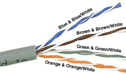
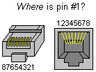
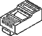

|
HOW-TO - Ethernet CablesOkay, here is the basic information you will need to make your own Ethernet cables. Parts: You'll need several feet of CAT 5/5e/6 cable, RJ45 ends and an RJ45 crimping to complete this. You'll also need a nice cut-off pliers. A wire striper and a cable tester are greatly helpful as well. Cable: First, start off with good quality cable, it has to be UTP (Unshielded Twisted Pair) Category 5/5e/6 cable, don't skimp on this (Shielded works too, but isn't necessary). Bulk cable comes in many types, there are 2 basic categories, solid and braided cable. Braided cable tends to work better in "patch" applications for desktop use. It is more flexible and resilient than solid cable and easier to work with, but really meant for shorter lengths. Solid cable is meant for longer runs in a fixed position. Plenum rated cable should/must be used whenever the cable travels through an air circulation space. For example, above a false ceiling or below a raised floor. Your likely going to want braided type cable. Here is what the internals of the cable look like:  There are 8 color coded wires. These wires are twisted into 4 pairs of wires, each pair has a common color theme. One wire in the pair being a solid or primarily solid colored wire and the other being a primarily white wire with a colored stripe (Sometimes cheap cable doesn't have any color on the striped cable, the only way to tell is to check which other wire it is twisted around). Examples of the naming schemes used are: Orange (alternatively Orange/White) for the solid colored wire and White/Orange for the striped cable. The twists are extremely important. They are there to counteract noise and interference. It is important to wire according to a standard to get proper performance from the cable. The hardware expects the cable to have certain properties, a cable that does not fall within tolerance will cause errors and or failures. Besides, this maintains all your cables to the standards and makes it easy to find errors and cross-over cables. The standard I'm referring to, is primarily the TIA/EIA-568-A standard. This standard specifies two wiring standards for a 8-position modular connector such as is used in twisted pair Ethernet networks. The two wiring standards, T568A and T568B vary only in the arrangement of the colored pairs. As shown below I have chosen T568B for the straight through cable and T568A for the cross-over cable. I believe this to be the most common arrangement for Ethernet cables. It is also possible to wire it the opposite way (ie straight through is a T568A). Your choice might be determined by the need to match existing wiring, jacks or personal preference, but you should maintain consistency. RJ45 Ends: The RJ45 end is a 8-position modular connector that looks like a large phone plug. There are a couple variations available. The primary variation you need to pay attention to is whether the connector is intended for braided or solid wire. For braided/stranded wires, the connector has contacts that actually pierce the wire. For solid wires, the connector has fingers which pierce the insulation and make contact with the wire by grasping it from both sides. The connector is the weak point in an Ethernet cable, choosing the wrong one will often cause grief later. If you just walk into a computer store, it's pretty impossible to tell what type of connector it is, if it isn't specifically labeled. Strain relief boots are somewhat helpful sometimes. Here is a diagram and pin out:   Ethernet Cables: Now, on to the cables. There are two basic cables. A straight through cable, which is used to connect to a hub or switch, and a cross-over cable used to operate in a peer-to-peer fashion without a hub/switch. Gigabit copper interfaces can actually cross and un-cross a cable automatically as needed, really quite nice. Since you are making your own cables, I will assume you understand which cable you need. Standard, Straight-Through Wiring (both ends are the same):
Table 1 - Straight-Through Cable Pin out 568A
Standard, Straight-Through Wiring (both ends are the same):
Table 1 - Straight-Through Cable Pin out 568B
If you look closely, you will noticed that the green and orange pairs are swapped or crossed, these are the transmit and receive pairs. Procedure: To create the cable, strip off about 2 inches of the cable sheath. When you get to the second side, cut the wire to length and make sure it is more than long enough for your needs. Remember, an end to end connection should extend at least 1m (3ft) and not more than 100m (~328ft). Yes, there is a minimum, its little known, little referred to and not usually important, but I have seen cases where short cables caused problems. The longer the cable becomes the more it may affect performance, usually it is a gradual decrease in speed and increase in latency. When uplinking between (cascading) hubs/switches, you usually need a very short cable, less than 1m, check the device's specifications. Next untwist the pairs, don't untwist them beyond what you have exposed, the more untwisted cable you have the worse the problems you can run into. Now you want to align the colored wires according to the diagrams above. When nicely aligned, hold them in line together and trim them all to the same length, about 1/2" to 3/4" left exposed from the sheath. And then you want to insert them into the RJ45 end and make sure each wire is fully inserted to the front of the RJ45 end and in the correct order. The sheath of the cable should extend into the RJ45 end by about 1/2" and will be held in place by the crimp. Crimp the end with the crimping tool and once again verify the wires ended up the right order and that the wires extend to the front of the RJ45 end and make good contact with the metal contacts in the RJ45 end. If you have a cable tester, put it to use, and verify the proper connectivity of your newly made cable. That should be it, if your cable doesn't turn out, look closely at each end and see if you can find the problem. Usually a wire ended up in the wrong place or more commonly, one of the wires didn't extend to the front of the RJ45 connector and is making no, or poor contact. If you see a mistake or problem, cut the end off and start again.
Notes:
*Designed to work on MOST category 5 cable, category 5e specifications ensure
1000Base-T operation
Increasing category levels are backward compatible.
|
|